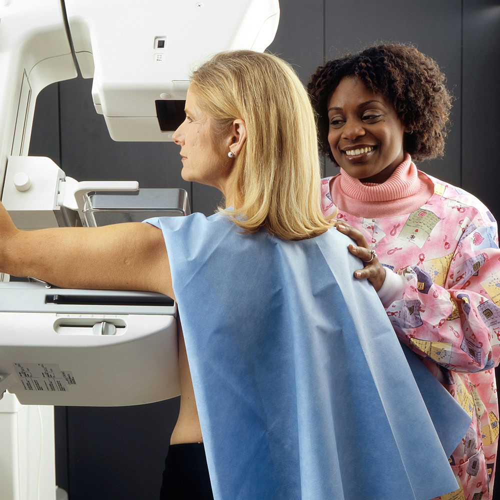

Colonoscopia
- Prevenção e diagnóstico precoce do câncer colorretal
- Equipamento de última geração
- Sedação supervisionada por anestesista
Sobre a Colonoscopia
A colonoscopia é um exame médico que permite a visualização do interior do cólon e do reto por meio de um tubo flexível com uma câmera na ponta. É utilizada para diagnosticar e prevenir doenças como pólipos, inflamações e câncer colorretal. O procedimento é realizado com sedação para maior conforto do paciente.